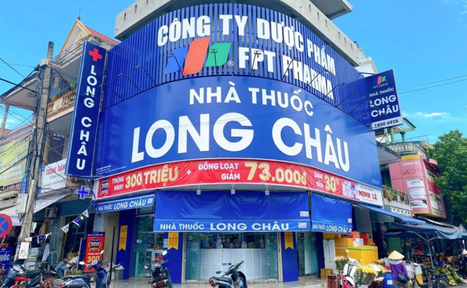
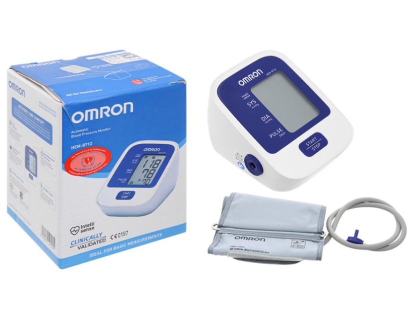
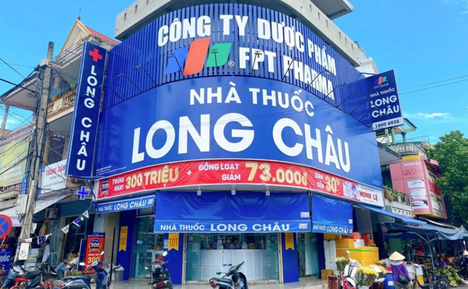
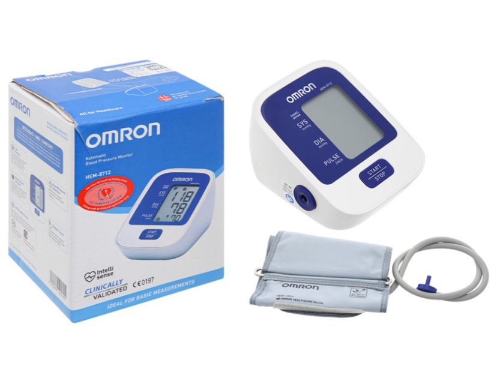

💊 Nhà thuốc FPT Long Châu
Nhà thuốc FPT Long Châu là một trong những hệ thống nhà thuốc uy tín hàng đầu tại Việt Nam, cung cấp đa dạng các loại thuốc, thực phẩm chức năng và thiết bị y tế chính hãng. Với đội ngũ dược sĩ tận tâm và hệ thống phân phối rộng khắp, Long Châu cam kết mang đến sản phẩm chất lượng cùng dịch vụ tư vấn tận tình đến từng khách hàng.
FPT Long Châu không ngừng mở rộng hệ thống, hiện diện tại hầu hết các tỉnh thành trên toàn quốc. Nhà thuốc ứng dụng công nghệ trong quy trình quản lý, giúp khách hàng dễ dàng tra cứu, mua sắm và nhận được sự chăm sóc y tế an toàn, tiện lợi.
🏥 Dịch vụ tại FPT Long Châu
Một số dịch vụ tiêu biểu mà FPT Long Châu cung cấp:
- Tư vấn sử dụng thuốc bởi dược sĩ chuyên môn
- Đo huyết áp, đo đường huyết miễn phí tại cửa hàng
- Giao thuốc tận nơi trên toàn quốc
- Hệ thống tích điểm – đổi ưu đãi
- Mua hàng trực tuyến qua app và website
🧴 Danh mục sản phẩm tại Long Châu
- Thuốc kê đơn – không kê đơn
- Vitamin và thực phẩm bổ sung
- Thiết bị y tế: máy đo huyết áp, máy đo đường huyết,...
- Sản phẩm chăm sóc sức khỏe cá nhân
- Dược – mỹ phẩm
🏆 Top 5 sản phẩm bán chạy tại Long Châu
- Viên uống bổ xương khớp Glucosamine
- Vitamin tổng hợp Centrum
- Máy đo huyết áp điện tử Omron
- Nước súc miệng Listerine
- Sữa bột Ensure Gold cho người lớn tuổi